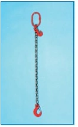

Catene, tiranti e accessori
Tirante in catena DOS
Tirante in catena grado 80 con ganci terminali.
- Tipo
- DOS
- Bracci
- 2
- Grado
- 80
- Coefficiente documentato
- 4:1
Varianti documentate
Confronta i dati disponibili. Le tavole originali completano le informazioni della scheda.
| Variante | Diametro catena |
|---|---|
| DOS 7 | 7 mm |
| DOS 8 | 8 mm |
| DOS 10 | 10 mm |
| DOS 13 | 13 mm |
| DOS 16 | 16 mm |
| DOS 20 | 20 mm |
| DOS 22 | 22 mm |
Prima di scegliere.
Dati trascritti dal catalogo originale. Portate, misure, configurazioni e riferimenti normativi vanno confermati nella documentazione del prodotto fornito; i valori non costituiscono istruzioni di impiego.